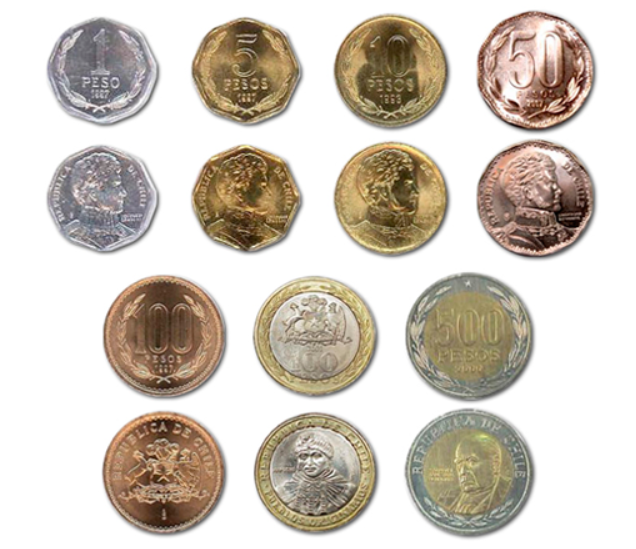

Escasez de monedas: Banco Central llama a usar dinero en efectivo
Negocios

"Romper el chanchito", es el llamado de la autoridad, pero no se trata de gastar dinero irresponsablemente. Lo que se busca es poner en circulación el "sencillo", las monedas o billetes pequeños que con la pandemia se quedaron guardados en la casa y hoy escasean.
Volver al inicio
Atras